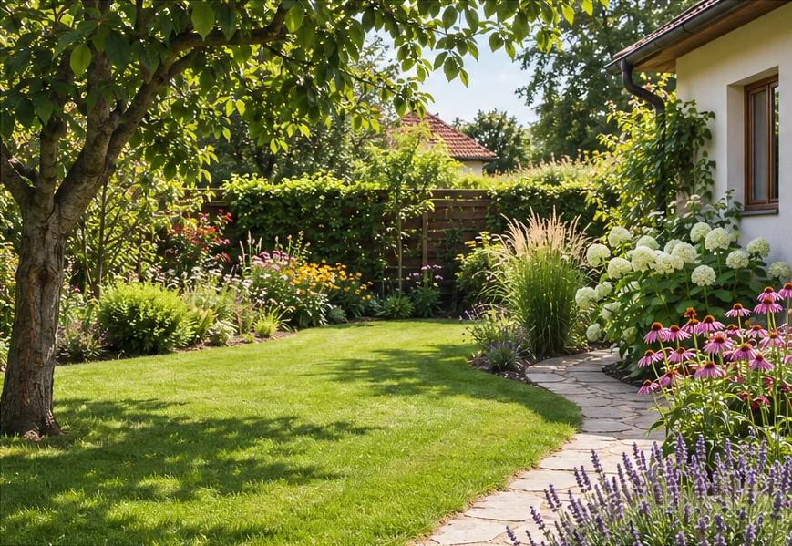

Realizace zahrad
Kompletní realizace zahrad i firemních prostor.
- Nové zahrady a předzahrádky
- Obnova a revitalizace zahrad
- Zakládání trávníků
- Výsadby stromů a keřů
Chrudim, Pardubice, Vysoké Mýto a okolí
Od založení zahrady přes pravidelnou péči o zeleň až po rizikové kácení stromů.

Kompletní realizace zahrad i firemních prostor.
Pravidelná i jednorázová péče o zahradu.
Bezpečné kácení stromů i ve stísněných podmínkách.
Odborný přístup ke stromům i okrasným dřevinám.
Kompletní práce kolem domu a zahrady.
Fotografie z dokončených zakázek doplníme.
Probrat vlastní zakázkuZavolejte, kde zahrada je a co potřebujete udělat. Pro první představu pomůže přibližná plocha nebo fotografie.
Pro nacenění upřednostňuji osobní setkání na místě. Domluvíme rozsah práce, cenu a termín.
V domluveném termínu přijedu. Podle potřeby si můžeme domluvit i pravidelnou údržbu.
Zavolejte mi a domluvíme se na práci i osobní prohlídce zahrady. Připravím vám nezávaznou kalkulaci zdarma.
Jiří Kusý